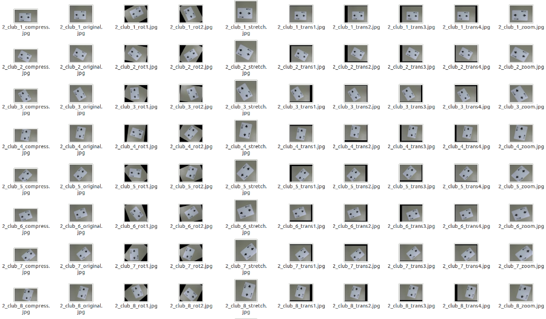

Baxter Shuffle Overview
The project used Baxter to perform a simplified version of the classic shell game. The original idea was that an object would be placed under one cup and Baxter would shuffle the three cups for some period of time. One of the audience could then guess which cup contains the object by placing their hand in front of the cup, and in response Baxter would grasp the cup and lift it to (maybe) reveal the object then place the cup back down on the table. We simplified that version of the shell game in two ways:
Instead of using cups and an object hidden inside one of the cups, this version uses three cubes, one of which has a marker on the underside;
instead of shuffling the blocks randomly, Baxter moves each block to a position chosen randomly from a set of specified positions. The Shuffle Algorithm and Further Improvements sections below explain this simplification in greater detail..
In the project, we used Baxter Robot to perform a simplified version of the classic shell game with inverse kinematics and motion planning for the limb motion.
Fig.1 Classic shell game (left) and a Baxter Robot (right)
Baxter Shuffle Process
Preparation: Baxter Robot, ROS Indigo on Ubuntu 14.04, Three colored cubes(one with marker)
Approach:
1. Move the gripper to home position
2. Sweep the table to detect the cubes
3. Store the position of the three cubes
4. Move the gripper to the first cube
5. Pick up the cube
6. Move the gripper to a random position
7. Place the cube on the table
8. Store the new location of the cube
9. Repeat step 4~8 to the rest two cubes
10. Move the gripper to a random cube
11. Pick up the cube
12. Move the gripper back to one of the original position
13. Place the cube on the table
14. Repeat step 10~13 to the rest two cubes
Fig.3 After data augmentation, the dataset has been expanded to 10400 images.
Approach: The learners in the project are 5-Nearest Neighbor, Support Vector Machine, 15-Layer Neural Net algorithm from Scikit-Learn and Convolutional Neural Net algorithm(CNN) from tflearn packages. The feature used for CNN is convolutional features, while features for other algorithms is Dense SIFT (DSIFT), a computer vision tool used to detect objects in an image. 10-fold cross validation is used to verify the accuracy of the model.
Baxter Shuffle Process

Fig.4 Computer recognized different cards in real time.
With the augmented data set, the accuracy of SVM and CNN algorithms increased significantly. The best model we obtained has an accuracy of 98.31% with the CNN algorithm which uses 2 layers with 250 neurons.